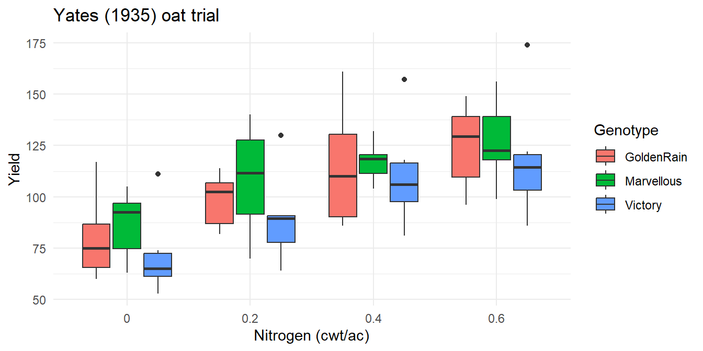

flowchart LR
A[Projects &<br/>working directory] --> B[Vectors &<br/>data frames]
B --> C[tidyverse verbs<br/>filter · mutate · summarise]
C --> D[ggplot2<br/>grammar of graphics]
D --> E[Functions &<br/>reading genomic files]
E --> F[Quarto<br/>reports]
Week 0b — R Essentials
Just enough R to be dangerous, in one sitting
1 Projects and paths
Always work inside an RStudio Project (.Rproj) and build paths with here::here() — scripts then run on any machine, which is half of reproducibility.
2 Vectors and data frames
Code
yield <- c(42.1, 39.8, 45.3, 41.0) # numeric vector
line <- c("L1", "L2", "L3", "L4")
trial <- data.frame(line, yield)
trial$yield_kg <- trial$yield * 67.25 # bu/ac -> kg/ha (canola)
trial line yield yield_kg
1 L1 42.1 2831.225
2 L2 39.8 2676.550
3 L3 45.3 3046.425
4 L4 41.0 2757.2503 The six tidyverse verbs that do 90% of work
Code
library(tidyverse)
oats <- agridat::yates.oats # a real 1930s split-plot oat trial (Yates)
glimpse(oats)Rows: 72
Columns: 8
$ row <int> 16, 12, 3, 14, 8, 5, 15, 11, 3, 14, 8, 6, 16, 11, 4, 13, 7, 6, 1…
$ col <int> 3, 4, 3, 1, 2, 2, 4, 4, 4, 2, 1, 1, 4, 3, 4, 1, 1, 2, 3, 3, 3, 2…
$ yield <int> 80, 60, 89, 117, 64, 70, 82, 102, 82, 114, 103, 108, 94, 89, 86,…
$ nitro <dbl> 0.0, 0.0, 0.0, 0.0, 0.0, 0.0, 0.2, 0.2, 0.2, 0.2, 0.2, 0.2, 0.4,…
$ gen <fct> GoldenRain, GoldenRain, GoldenRain, GoldenRain, GoldenRain, Gold…
$ block <fct> B1, B2, B3, B4, B5, B6, B1, B2, B3, B4, B5, B6, B1, B2, B3, B4, …
$ grain <dbl> 20.00, 15.00, 22.25, 29.25, 16.00, 17.50, 20.50, 25.50, 20.50, 2…
$ straw <dbl> 28.00, 25.00, 40.50, 28.75, 32.00, 27.25, 30.75, 37.75, 36.00, 3…Code
oats |>
filter(nitro > 0) |>
mutate(yield_t = yield * 0.0251) |>
group_by(gen, nitro) |>
summarise(mean_yield = mean(yield), .groups = "drop") |>
arrange(desc(mean_yield)) |>
head()# A tibble: 6 × 3
gen nitro mean_yield
<fct> <dbl> <dbl>
1 Marvellous 0.6 127.
2 GoldenRain 0.6 125.
3 Victory 0.6 118.
4 Marvellous 0.4 117.
5 GoldenRain 0.4 115.
6 Victory 0.4 111.filter rows · select columns · mutate new variables · group_by+summarise aggregate · arrange sort · left_join merge (genotype ↔︎ phenotype tables).
4 ggplot2: plots as grammar
Code
ggplot(oats, aes(x = factor(nitro), y = yield, fill = gen)) +
geom_boxplot() +
labs(x = "Nitrogen (cwt/ac)", y = "Yield", fill = "Genotype",
title = "Yates (1935) oat trial") +
theme_minimal()
Aesthetics map data → visual channels; geoms draw; facets split. Every figure in this course is built this way.
5 Reading genomic-style files
Code
pheno <- read_csv("data/phenotypes.csv")
geno <- read_tsv("data/genotypes.hmp.txt") # HapMap
vcf <- vcfR::read.vcfR("data/snps.vcf.gz") # VCF6 Writing functions
Code
cv <- function(x) 100 * sd(x, na.rm = TRUE) / mean(x, na.rm = TRUE)
cv(oats$yield)[1] 26.02534If you paste code three times, it should be a function; if a function is used in three scripts, it belongs in R/helpers.R.
7 Quarto
This entire website is Quarto: prose + chunks + output in one .qmd. Render with the Render button or quarto render. Your analyses become reports automatically — this is the reporting standard the course assumes.
8 Exercises
- With
agridat::oats, compute the CV of yield per genotype. - Plot yield vs nitrogen as points + a loess smooth, faceted by genotype.
- Write
standardize <- function(x)returning z-scores; apply it to yield within each block usinggroup_by() |> mutate().